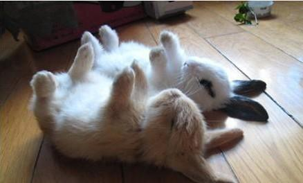

朋友说："有一天遇见3个大汉要揍他，于是便与那3个大汉打了起来。"回来以后便吹起牛来："我让他们打了两个小时硬没把我打倒。"别人问怎么回事？他说："绑树上打的。"
蜗牛妈对蜗牛说：你也不小了，明天我带你到隔壁村子相亲去。蜗牛说：我才12岁，还没到法定年龄呢。妈：等咱们走到那你就够了。
刚在人人上看到的一男："做我女朋友吧。"女："不要，就凭你？"男："我在学校图书馆有座位。"女："那好吧。"……每到期末，图书馆占位就是个技术活。
元旦，和mm逛街。家电卖场有活动，主持人在台上调戏大家。这时，他拎起一个好丑的高压锅，出了个字谜，我动作飞快，手机百度，mm喊了答案。答对了！mm上台领她的锅，主持人说她太幸运，这锅值80几呢。mm抢过话筒冲台下喊：40块！谁要！我卖！（太奔放了）台下鸦雀无声，主持人脸都分叉了。mm转头对他说：你看，40都没人要。
在食堂吃饭时听的，说是一女生跟男朋友分手了，旁边她同学安慰她："那男的有什么好，土木工程的，一听就知道又"土"又"木"的！"听到这里我不禁想起了软件工程的同学们。。。。。。凌乱。。
学校食堂包子馅巨少。一哥们去买，指着包子，对着食堂卖饭的大妈喊道："给我三个那种带褶的馒头！"大妈脸瞬间就冻了，这哥们淡定而诚恳道："以后做馒头时小心点，别总是掺几片菜叶子！"说完心满意足的走了，扔下卖饭大妈一脸黑线。
回顶部 上一篇 下一篇 返回首页